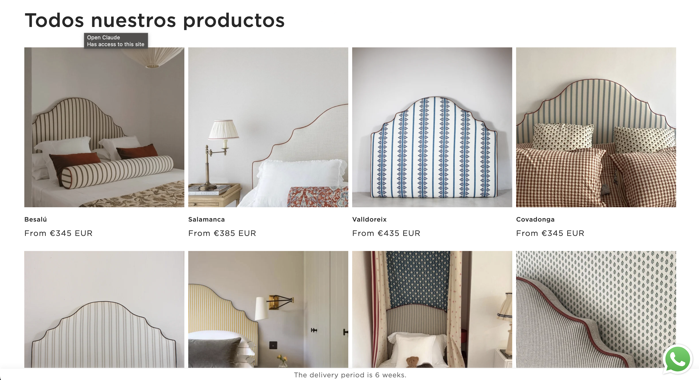

Cofaneti website redesign


// overview
Cofaneti, a Spanish upholstered-furniture brand, needed a complete redesign of their Shopify store — moving away from a dated, generic layout toward a modern, sleek aesthetic that matched the quality of their product. Working from the client's reference material and design direction, the goal was to rebuild the storefront experience from the ground up: homepage, collection pages, product pages, and the overall visual language, so the site felt as considered and premium as the furniture itself. The store also needed to support multiple languages to serve the brand's international customer base, adding a layer of complexity across every template. This redesign also laid the foundation for a separate, more technical build — a custom made-to-order headboard configurator — meaning the new theme needed to be flexible enough to support that heavier functionality down the line.
// challenge
The existing store didn't reflect the brand's positioning. Visually, it read as an off-the-shelf theme rather than a considered brand experience, which undercut trust for a premium, made-to-order furniture brand. The client had a strong point of view — reference imagery, a clear aesthetic direction, specific layout preferences — but no single component existed yet to unify it into a working Shopify theme. On top of the visual rebuild, the site needed to work cleanly across multiple languages, meaning every custom section, layout, and piece of dynamic content had to be built with translation and locale-switching in mind from the start, not bolted on afterward. The redesign also needed to balance that custom, sleek visual identity with practical Shopify constraints: performance, maintainability, and compatibility with the more complex configurator functionality being built alongside it.
// solution
Rebuilt the storefront from the ground up with a modern, minimal visual language matched closely to the client's references — custom section layouts, typography, and spacing designed to feel premium and editorial rather than templated. Key pages (home, collections, product) were redesigned individually to support the brand's product photography and messaging, while keeping the underlying theme structure clean and flexible enough to integrate the custom headboard configurator as a distinct, more technical layer on top. The theme was built with Shopify's native multilanguage support throughout, so every custom section and piece of content translates correctly and customers can browse and shop in their preferred language. The result is a cohesive, multilingual site that reads as a custom-built brand experience end to end, not a stock theme with a new coat of paint.